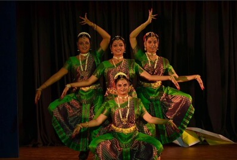

A Bharatanatyam performance at an award ceremony is a beautiful and culturally rich addition to the event. The performance is tailored to suit the occasion. A Bharatanatyam performance is a fitting tribute to the rich cultural heritage of India. The performance showcased a range of classical and contemporary pieces that demonstrate the versatility and creativity of the dance form.
The dancers in Ramya's Bharatanatyam dance troupe are highly trained and experienced, having studied the dance form for many years. They have a good understanding of the techniques, music, and storytelling elements that are essential to the art of Bharatanatyam. They perform at a variety of events, such as festivals, weddings, and cultural programs. They also participate in competitions and other dance events, showcasing their skills and artistry to audiences. The performances are highly choreographed, with precise movements, gestures, and expressions that are synchronized with the music. Her troupe plays an important role in preserving and promoting this traditional art form, as well as providing audiences with a rich cultural experience and the opportunity to appreciate the beauty and grace of Bharatanatyam dance.

The Dance Troupe
The Dance School
Ramya's Bharatanatyam dance school teaches this traditional dance form to students of all ages and backgrounds. She is passionate about preserving and sharing this art form. She offers a structured curriculum that includes training in dance techniques, music, and performance. Students will typically start with the basics, learning the various steps, postures, and hand gestures (mudras) that are used in Bharatanatyam. As they progress, they will learn more complex dance sequences and choreography, as well as the use of facial expressions and storytelling in their performances. In addition to dance training, she also offers classes in music, including vocal and instrumental training. This is because Bharatanatyam dance is often performed to classical Indian music, and dancers need to have a good understanding of rhythm and melody in order to perform effectively.